동일한 저장 장면·개체 ID·생태 좌표·표시 투영으로 1138×712 화면에서 촬영했습니다. 기존 reduced-motion 정지 상태를 사용했습니다. 이 비교의 실제 숲 내부는 1096×247px입니다. 사진이나 새 생물 자산을 넣지 않았습니다.
반복 수관, 지면 연결, 먼 숲, 토양 단면을 비교합니다.
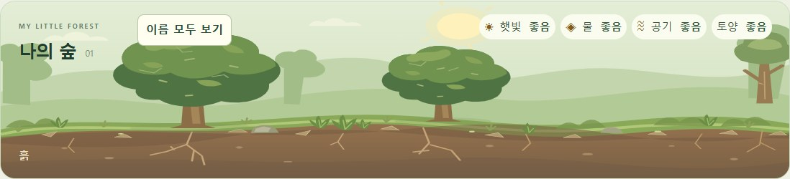
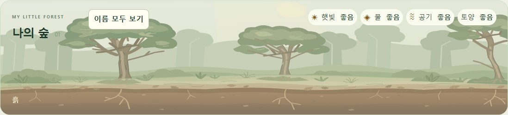
상수리나무·강아지풀·방아깨비·구름송편버섯·고초균. 새 학생의 카드 권한만 사용한 고정 배치 장면입니다.
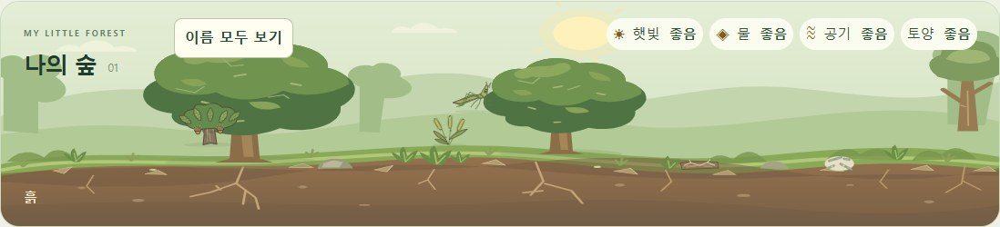
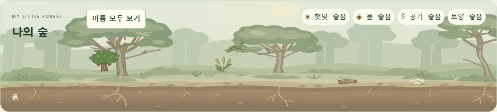
다람쥐·박새·직박구리·참매의 기존 지지 공간과 가지를 비교합니다.
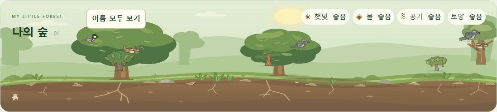
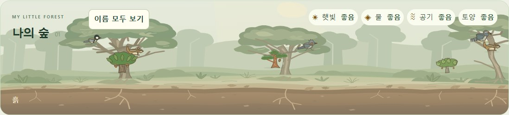
방아깨비·참개구리·멧토끼·고슴도치·족제비를 위한 열린 관찰 공간입니다.
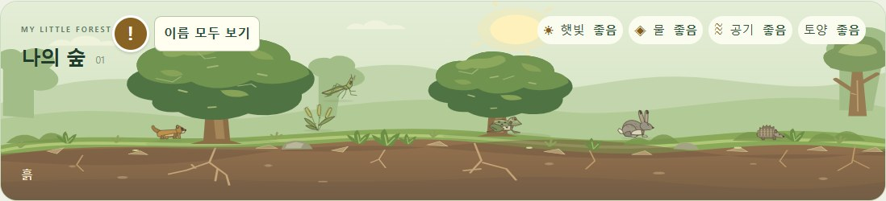
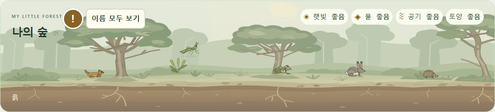
홍단딱정벌레·달팽이·분해자·참지렁이의 실제 표시 위치입니다. 지렁이가 낙엽에 덮이는 상태는 기존 모션입니다.
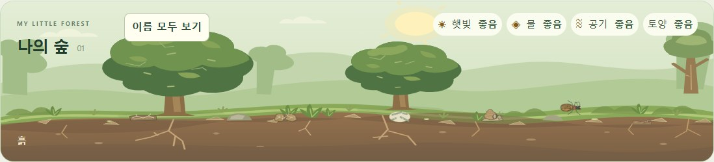
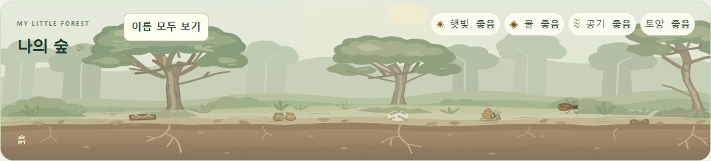
기존 오른쪽 수관·줄기·지면을 연결했습니다. 생활 공간과 실제 식물 먹이는 다른 계층입니다.
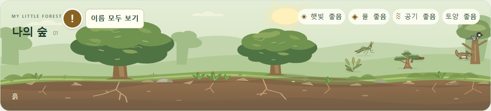
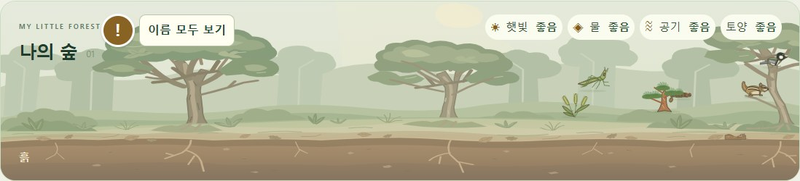
생물을 다시 그리거나 옮기지 않고 배경만 바꾼 밀집 장면입니다.
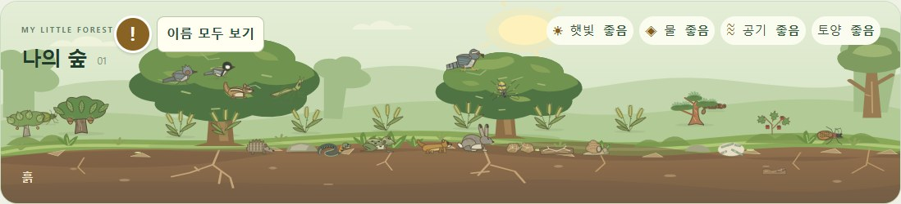
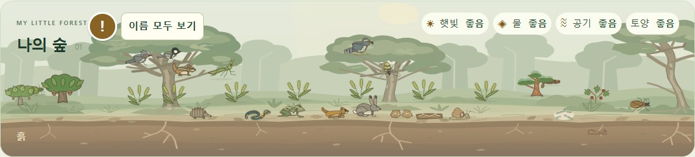
중심과 점선 범위는 data/forest-spaces.js의 값을 겹쳐 그린 검증 표시이며 게임에 나타나지 않습니다. 실제 SVG의 6개 가지/줄기가 각 중심을 지나는지 검사했습니다. 모든 개체가 항상 중심에 놓인다는 뜻은 아닙니다.
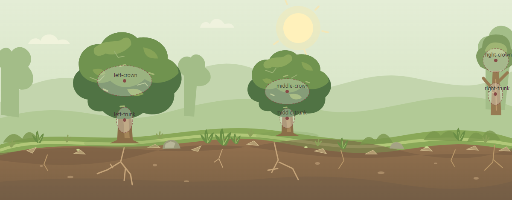
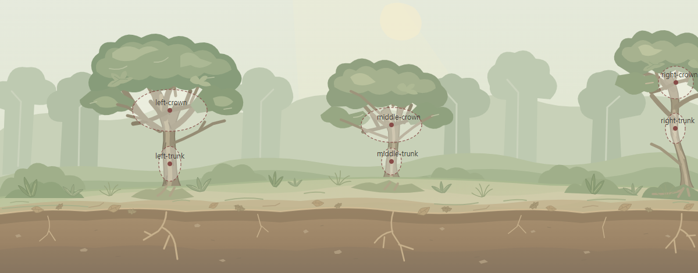